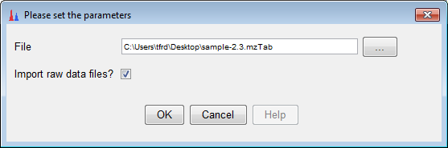

mzTab import
Description
This module imports the contents of a mzTab file into a peak list. If links to raw data files are available
in the mzTab file, these can automatically be imported together with the peak list.
Method parameters
- File
- Name of mzTab file to be imported
- Import raw data files?
- If selected, raw data files will also be imported if they are available. If the raw data files are not available,
empty raw data files will be generated by MZmine. Please note that missing files may lead to issues with other modules that need access to scan data.
